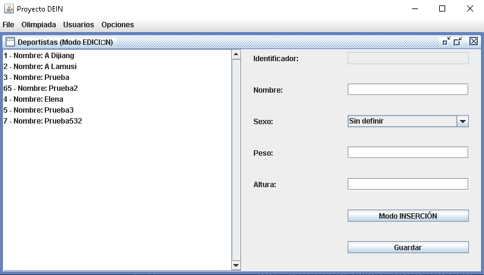

Esta ventana permite la visualización, edición e inserción de deportistas en la tabla Deportista. Se dividirá en dos partes, una posicionada a la izquierda, dirigida a la visualización y la otra a la derecha, que utilizaremos para editar o insertar nuevos deportistas en base al modo en el que nos encontremos y los datos introducidos en una serie de campos de texto y desplegables.
Visualización: Al abrir la ventana esta visualizará todos los deportistas encontrados en la tabla Deportista. Esta lista mostrará los nombres ordenados por el identificador de la persona listada. Solo se permitirá la selección de un deportista y esta selección actualizará la visualización de los campos nombre, sexo, peso y altura. Tal y como se ha mencionado anteriormente, la ventana dispondrá de dos modos entre los que podremos transicionar gracias a un botón. Estos cambian ligeramente la interfaz y nos permiten hacer diferentes acciones. Los modos son Edición, elegido por defecto al abrir la ventana, e Inserción.
Edición: Tras la selección de un deportista podremos editar los valores de sus campos, todos menos el identificador cuya edición aparecerá deshabilitada. Una vez el usuario haya elegido los nuevos valores correspondientes, pulsará en el botón “GUARDAR” y se validarán los cambios. En caso de que los nuevos valores sean correctos, se actualizará la base de datos con ellos.
Inserción: En este modo podremos editar todos los campos visualizados. Una vez el usuario pulse en el botón guardar se verificarán los datos y en caso de ser correctos, un nuevo Deportista con estos datos se añadirá a la base de datos.
* Sin importar el modo que se utilice para ejercer cambios en la base, la lista del marco será actualizada para mostrar siempre los datos más recientes.